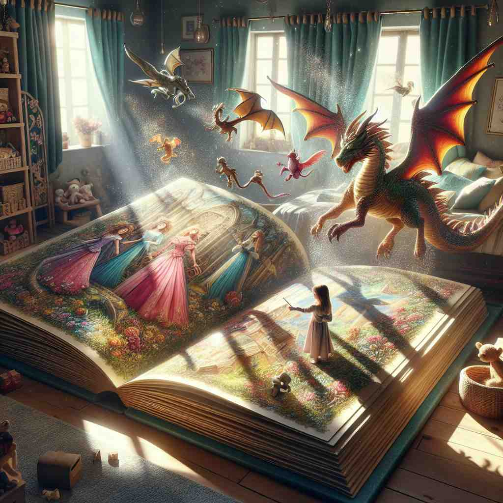

💬 The beautiful picture on the wall makes the room feel warm.
💬 They love to take a picture together at the beach.

💬 The girl is looking at the beautiful storybook picture.
💬 She loves to paint a picture of the sunset.
🔈 ['pɪktʃə]
🗝️ n. a visual representation of something on a surface
🖼️ 在一个美术馆里，一幅风景画挂在墙上，画中展现了宁静的乡村景象。游客们驻足欣赏，画上的每一个笔触都生动地再现了大自然的美丽。这幅画就是一种'picture'的体现，即在平面上对事物进行的视觉呈现。
🔍 想象一幅画或照片，这就是'picture'的核心含义——一种视觉表现。从这个核心概念出发，'picture'可以扩展到语言描述、抽象情况，甚至成为动词表示想象或描绘。记住这个核心视觉概念，你就能轻松理解和记忆'picture'的各种用法。
💬 The beautiful picture on the wall makes the room feel warm.
💬 They love to take a picture together at the beach.
💬 The girl is looking at the beautiful storybook picture.
💬 She loves to paint a picture of the sunset.
🌳 由词根 "pict"（描绘、画）加上名词后缀 "-ure" 组成，指通过绘画或摄影等方式创造出的图像或影像。
💡 可以联想为 "paint your picture"，即通过画画展示出来的图像，帮助记住 'picture' 和描绘、描述的关系。
🗝️ n. a description that gives you an idea of what something is like
🖼️ 在一个历史课上，老师用生动的语言为学生描绘古罗马的繁荣景象。她详细讲述了当时的建筑、服饰和生活方式，仿佛将学生带回到了那个时代。这种描述就像是一个'mental picture'，帮助学生形成对某个事物的清晰印象。
💬 His report painted a gloomy picture of the economy.
❓ 从视觉表现延伸到语言描述
🗝️ n. a situation or state of affairs
🖼️ 在一个商业会议上，经理正在阐述公司的发展战略。他分析了当前的市场状况、竞争对手以及公司的优势，给与会者描绘出一个全面的公司'picture'，即当前的情况何去何从。
💬 The overall picture for small businesses is improving.
❓ 从具体的视觉表现扩展到抽象的情况
🗝️ v. to imagine or visualize
🖼️ 在一个宁静的湖边，诗人闭上眼睛，去'picture'一个理想世界的样子。他的脑海中浮现出无忧无虑的生活、和谐美好的社区，这展现了'picture'作为一种想象或可视化过程的含义。
💬 I can't picture him as a doctor.
❓ 在头脑中创造视觉表现
🗝️ v. to represent or depict in a picture
🖼️ 在一个动画制作室里，艺术家正在努力工作。他用手中的画笔精心绘制出角色的每一个动作，将故事精彩地呈现在画布上。这展示了'picture'作为通过画作进行描绘的含义。
💬 The artist pictured the landscape in vibrant colors.
❓ 创作视觉表现
🗝️ n. a motion picture or film
🖼️ 在一个潮湿的电影院里，观众们期待已久的最新大片即将上映。灯光逐渐暗下来，屏幕上开始播放精彩的画面，用震撼的视听效果将观众带入了一个全新的世界。这种体验就是观看'motion pictures'或电影的感受。
💬 We went to see a picture at the cinema last night.
❓ 从静态视觉表现延伸到动态